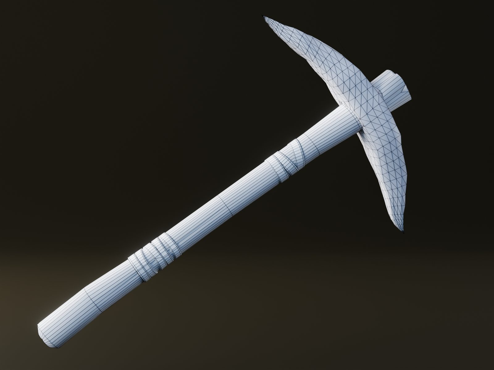

Introducing the project
What I'm making, why I'm making it alone, and what this devlog will cover.

I'm James, though most people online know me as Hues. I've been making 3D art for games since I was 13, and over the years I've contributed assets to team projects at Viking Studios, including Lost, Dust Wasteland Survival, and Project Delta.
This project is different. It's the largest thing I've taken on, and I'm building every part of it myself: concept art, 3D assets, programming, and implementation. Hues Studios is the name I'm putting on that work.
What the game is
It's a stylized survival and base-building game, built in Roblox Studio. You gather resources, craft tools, and build a base from modular pieces. The look is what I call line-stylized: hand-textured 3D assets with drawn line detail, so shapes stay clear and characterful instead of drifting toward the generic look a lot of survival games have.
The goal is a world where asset quality, texturing, placement systems, and constant iteration all push the same visual identity.
Why a devlog
Solo projects can disappear into a folder for years. Writing things down keeps me honest about progress, and it gives anyone following along a look at how the game is actually made, not just the polished end result.
What to expect here
- Art entries: new assets, each with wireframe, sculpt, and final passes, plus the decisions behind them.
- Systems entries: building, crafting, and survival mechanics as they come online.
- Updates: milestones, direction changes, and what I've learned along the way.
The pipeline
Most assets follow the same path: block out and model in Blender, sculpt surface detail in ZBrush, bake in Marmoset Toolbag, texture in Substance Painter, touch up in Photoshop, and bring it into Roblox Studio. The order changes from piece to piece, but the priorities don't: clean forms, efficient bakes, and textures that give each asset its personality.
The first finished asset is a stone pickaxe, and that's the next entry.